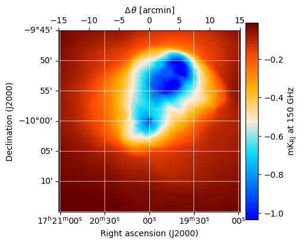
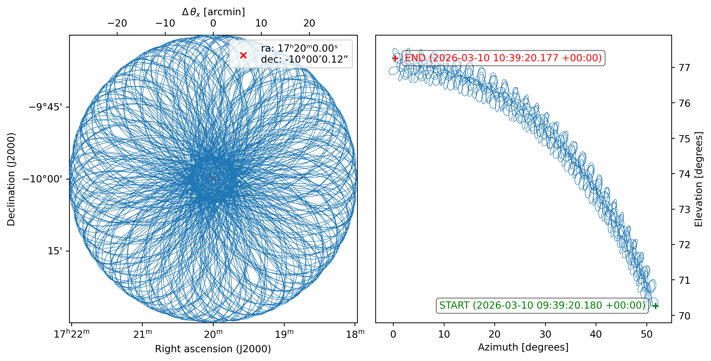
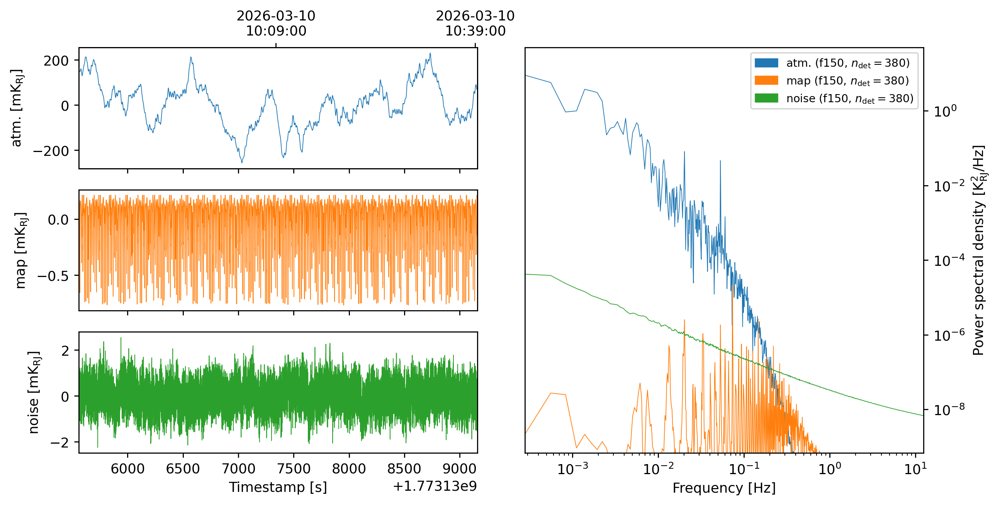
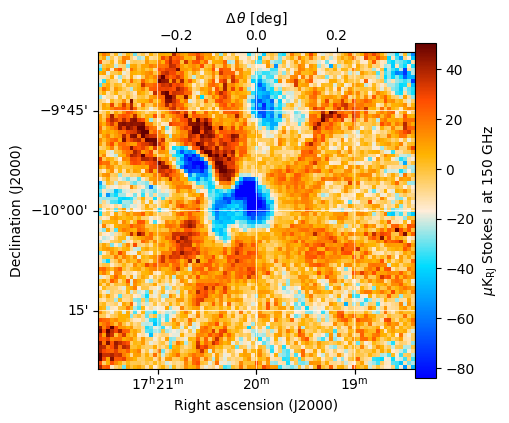
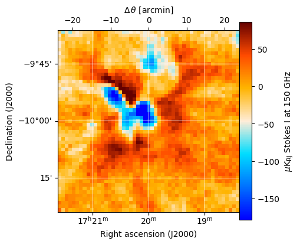

Maximum likelihood mapmaking¶
[1]:
import maria
from maria.io import fetch
input_map = maria.map.load(fetch("maps/cluster2.fits"), nu=150e9)
input_map.data *= 5e1
input_map[..., 256:-256, 256:-256].plot(cmap="cmb")
print(input_map)
2025-11-24 21:00:20.672 INFO: Fetching https://github.com/thomaswmorris/maria-data/raw/master/maps/cluster2.fits
Downloading: 100%|████████████████| 4.20M/4.20M [00:00<00:00, 23.9MB/s]
ProjectionMap:
shape(nu, y, x): (1, 1024, 1024)
stokes: naive
nu: [150.] GHz
t: naive
z: naive
quantity: spectral_flux_density_per_pixel
units: Jy/pixel
min: -5.777e-04
max: -1.459e-07
rms: 7.352e-05
center:
ra: 17ʰ20ᵐ0.00ˢ
dec: -10°00’0.00”
size(y, x): (1°, 1°)
resolution(y, x): (3.516”, 3.516”)
beam(maj, min, rot): [[0. 0. 0.]] rad
memory: 16.78 MB

[2]:
from maria import Planner
planner = Planner(target=input_map, site="cerro_toco", constraints={"el": (70, 90)})
plans = planner.generate_plans(total_duration=900,
max_chunk_duration=900,
sample_rate=50,
scan_options={"radius": input_map.width.deg / 2})
plans[0].plot()
print(plans)
PlanList(1 plans, 900 s):
start_time duration target(ra,dec) center(az,el)
chunk
0 2025-11-25 16:29:25.956 +00:00 900 s (260°, -9.998°) (48.37°, 71.36°)

[3]:
# import maria
from maria.instrument import Band
f150 = Band(
center=150e9,
width=30e9,
NET_RJ=30e-6,
knee=1e1,
gain_error=2e-2)
array = {"field_of_view": 0.1,
"beam_spacing": 1.2,
"primary_size": 50,
"shape": "circle",
"bands": [f150]}
instrument = maria.get_instrument(array=array)
print(instrument)
instrument.plot()
Instrument(1 array)
├ arrays:
│ n FOV baseline bands polarized
│ array1 756 6.056’ 0 m [f150] False
│
└ bands:
name center width η NEP NET_RJ NET_CMB FWHM
0 f150 150 GHz 30 GHz 0.5 6.125 aW√s 30 uK_RJ√s 52.02 uK_CMB√s 10.5”

[4]:
sim = maria.Simulation(
instrument,
plans=plans,
site="cerro_toco",
map=input_map,
atmosphere="2d",
atmosphere_kwargs={"weather": {"pwv": 1.0}},
)
print(sim)
Simulation
├ Instrument(1 array)
│ ├ arrays:
│ │ n FOV baseline bands polarized
│ │ array1 756 6.056’ 0 m [f150] False
│ │
│ └ bands:
│ name center width η NEP NET_RJ NET_CMB FWHM
│ 0 f150 150 GHz 30 GHz 0.5 6.125 aW√s 30 uK_RJ√s 52.02 uK_CMB√s 10.5”
├ Site:
│ region: chajnantor
│ timezone: America/Santiago
│ location:
│ longitude: 67°47’16.08” W
│ latitude: 22°57’30.96” S
│ altitude: 5190 m
│ seasonal: True
│ diurnal: True
├ PlanList(1 plans, 900 s):
│ start_time duration target(ra,dec) center(az,el)
│ chunk
│ 0 2025-11-25 16:29:25.956 +00:00 900 s (260°, -9.998°) (48.37°, 71.36°)
├ '2d'
└ ProjectionMap:
shape(stokes, nu, t, y, x): (1, 1, 1, 1024, 1024)
stokes: I
nu: [150.] GHz
t: [1.76401802e+09]
z: naive
quantity: spectral_flux_density_per_pixel
units: Jy/pixel
min: -5.777e-04
max: -1.459e-07
rms: 7.352e-05
center:
ra: 17ʰ20ᵐ0.00ˢ
dec: -10°00’0.00”
size(y, x): (1°, 1°)
resolution(y, x): (3.516”, 3.516”)
beam(maj, min, rot): [[0. 0. 0.]] rad
memory: 16.78 MB
[5]:
tods = sim.run()
tods[0].plot()
2025-11-24 21:00:30.554 INFO: Simulating observation 1 of 1
Constructing atmosphere: 100%|████████████████| 8/8 [00:08<00:00, 1.01s/it]
Generating turbulence: 100%|████████████████| 8/8 [00:00<00:00, 16.91it/s]
Sampling turbulence: 100%|████████████████| 8/8 [00:04<00:00, 1.65it/s]
Computing atmospheric emission: 100%|████████████████| 1/1 [00:00<00:00, 1.05it/s, band=f150]
Sampling map: 100%|████████████████| 1/1 [00:16<00:00, 16.08s/it, band=f150]
Generating noise: 100%|████████████████| 1/1 [00:01<00:00, 1.31s/it, band=f150]
2025-11-24 21:01:22.871 INFO: Simulated observation 1 of 1 in 52.31 s

[6]:
from maria.mappers import MaximumLikelihoodMapper
ml_mapper = MaximumLikelihoodMapper(tods=tods,
width=0.8*input_map.width.deg,
height=0.8*input_map.height.deg,
units="Jy/pixel")
print(f"{ml_mapper.loss() = }")
2025-11-24 21:01:32.995 INFO: Inferring center {'ra': '17ʰ20ᵐ0.51ˢ', 'dec': '-9°59’53.06”'} for mapper.
2025-11-24 21:01:33.008 INFO: Inferring mapper resolution 0.375’ for mapper from observation patch.
2025-11-24 21:01:33.010 INFO: Inferring mapper stokes parameters 'I' for mapper.
Preprocessing TODs: 100%|████████████████| 1/1 [00:01<00:00, 1.41s/it]
Mapping: 100%|██████████| 1/1 [00:03<00:00, 3.32s/it, tod=1/1]
Computing noise model: 100%|██████████| 1/1 [00:06<00:00, 6.09s/it, tod=1/1]
ml_mapper.loss() = tensor(2564628.2500, grad_fn=<AddBackward0>)
The initial map is a “guess” constructing by heavily filtering the input TODs:
[7]:
print(ml_mapper.map)
ml_mapper.map.plot(cmap="cmb")
ProjectionMap:
shape(stokes, nu, t, y, x): (1, 1, 1, 128, 128)
stokes: I
nu: [150.] GHz
t: [1.76408862e+09]
z: naive
quantity: spectral_flux_density_per_pixel
units: Jy/pixel
min: -4.125e-02
max: 1.966e-02
rms: 4.380e-03
center:
ra: 17ʰ20ᵐ0.51ˢ
dec: -9°59’53.06”
size(y, x): (0.8°, 0.8°)
resolution(y, x): (0.375’, 0.375’)
beam(maj, min, rot): [[[10.4977129 10.4977129 0. ]]]”
memory: 0.2621 MB

To fit the map we run
[8]:
ml_mapper.fit(epochs=4, steps_per_epoch=32, lr=1e-1)
epoch 1/4: 100%|████████████████| 32/32 [02:34<00:00, 4.83s/it, loss=3.229e+04]
epoch 2/4: 100%|████████████████| 32/32 [02:34<00:00, 4.83s/it, loss=1.158e+04]
epoch 3/4: 100%|████████████████| 32/32 [02:34<00:00, 4.83s/it, loss=5.354e+03]
epoch 4/4: 100%|████████████████| 32/32 [02:34<00:00, 4.84s/it, loss=4.478e+03]
which gives us an improved map
[9]:
ml_mapper.map.plot(cmap="cmb")

that will improve more as it continues to fit.